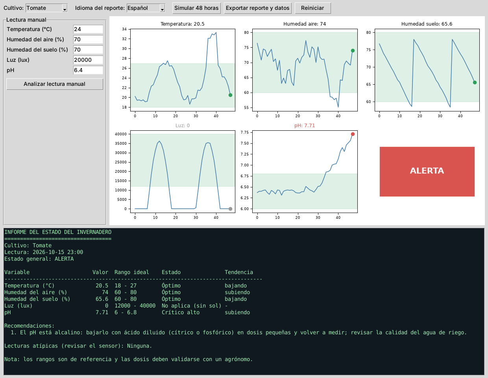
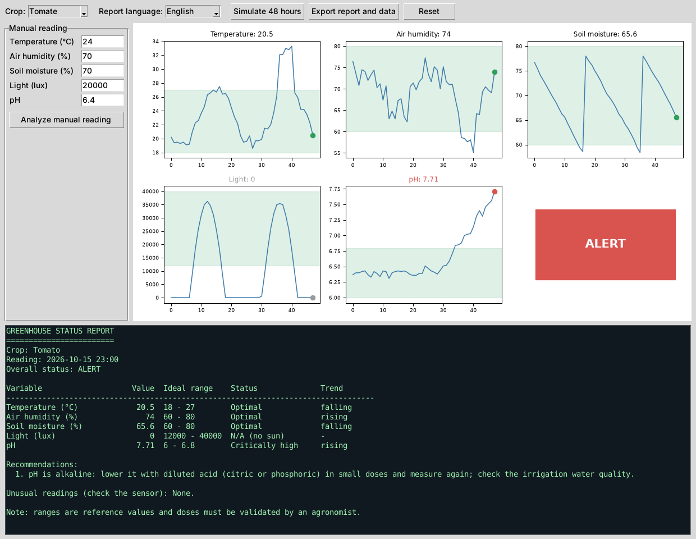
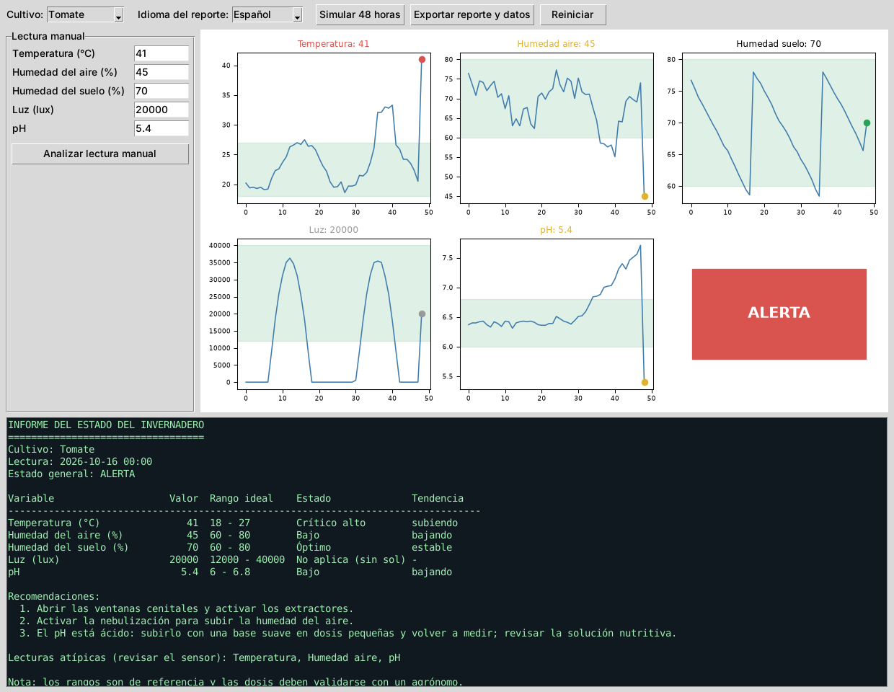

1Resumen
Una empresa que administra un invernadero ya tenía un proyecto de monitoreo y nos pidió completarlo con dos cosas: medir el pH, una variable que todavía no incluía, y generar el reporte del estado del invernadero también en inglés. Hicimos ambas cosas en una aplicación de escritorio en Python que lee las variables, las compara con el rango ideal del cultivo, detecta tendencias y saltos extraños, y escribe un informe con recomendaciones en español o en inglés.
2El caso
El invernadero tiene sensores que miden cada hora la temperatura, la humedad del aire, la humedad del suelo y la luz. El problema es que revisar gráficas todo el día no es práctico: alguien tiene que darse cuenta de que algo se salió de rango, entender por qué importa y decidir qué hacer. La empresa quiere que el sistema haga ese trabajo y lo explique en un reporte que pueda leer también su socio extranjero, por eso el pedido del inglés.
El pH importa porque determina qué tanto puede absorber la planta de los nutrientes disueltos en el agua de riego. Si el pH se sale de rango, la planta puede mostrar deficiencias aunque el abono esté presente. Por eso la empresa lo quería dentro del monitoreo.
3Por qué lo llamamos un sistema cognitivo
Un sistema cognitivo no se limita a guardar datos: los interpreta de forma parecida a como lo haría una persona con experiencia y explica lo que concluye. En nuestro caso trabaja en cuatro pasos.
Es un sistema basado en reglas y estadística sencilla, no un modelo entrenado con aprendizaje automático. Lo elegimos así porque las reglas se pueden explicar y revisar con el agrónomo, y porque no teníamos un historial real para entrenar. A futuro se podría reemplazar la parte de interpretación por un modelo entrenado con datos del propio invernadero.
4Lo que agregamos 1: la variable pH
El pH entró igual que las otras variables: tiene su sensor (en la simulación, una lectura por hora), su gráfica con la franja verde del rango ideal, su estado (óptimo, bajo, alto o crítico), su tendencia y sus recomendaciones. Los rangos dependen del cultivo, así que la aplicación tiene un selector con tres:
| Cultivo | pH ideal | pH crítico (fuera de) | Temperatura ideal (°C) |
|---|---|---|---|
| Tomate | 6,0 a 6,8 | 5,0 a 7,5 | 18 a 27 |
| Lechuga | 5,8 a 6,5 | 5,0 a 7,2 | 15 a 24 |
| Fresa | 5,5 a 6,5 | 4,8 a 7,2 | 15 a 26 |
Cuando el pH está alto la recomendación es bajarlo con un ácido diluido en dosis pequeñas y volver a medir, y cuando está bajo, subirlo con una base suave. En ambos casos se pide revisar el origen (calidad del agua de riego o solución nutritiva), porque corregir el número sin buscar la causa solo aplaza el problema.
5Lo que agregamos 2: el reporte en inglés
Para no duplicar código, todos los textos que ve la persona (nombres de variables, estados, tendencias, recomendaciones y el formato del informe) viven en un diccionario con una entrada para cada idioma. La lógica del sistema es una sola y el idioma solo cambia la redacción. Esto tiene una ventaja: agregar un tercer idioma consiste en copiar el diccionario y traducirlo. En la ventana se cambia con el selector «Idioma del reporte» y al exportar se guardan los dos informes, reporte_es.txt y reporte_en.txt.
ES: Estado general: ALERTA
pH 7.71 6 - 6.8 Crítico alto subiendo
EN: Overall status: ALERT
pH 7.71 6 - 6.8 Critically high rising6Resultados
Simulación de 48 horas
Simulamos dos días de lecturas para el cultivo de tomate e incluimos a propósito dos problemas: una ola de calor (horas 36 a 40) y un pH que empieza a subir desde la hora 30, como pasaría si el agua de riego estuviera volviéndose alcalina.

| Hora simulada | Qué pasó | Estado general |
|---|---|---|
| 0 a 33 | Todo dentro de rango; la temperatura sube y baja con el día. | Óptimo, con algún aviso breve |
| 34 (15 oct, 10:00) | El pH llega a 6,84 y sale del rango ideal. | Atención |
| 36 a 40 | Ola de calor: la temperatura llega a unos 32 o 33 °C. El sistema marca el salto como lectura atípica. | Atención |
| 45 (15 oct, 21:00) | El pH llega a 7,51 y cruza el límite crítico. | Alerta |
| 47 (15 oct, 23:00) | pH de 7,71 y subiendo; la recomendación es bajar el pH con ácido diluido. | Alerta |
Algo que corregimos durante las pruebas: al principio el sistema marcaba alerta cada amanecer y atardecer porque la luz baja de forma natural. Ahora la luz solo se evalúa cuando el sol está alto (de 8:00 a 16:00) y fuera de ese horario aparece como «No aplica». También vimos que tomar la subida normal de la mañana como lectura atípica era un error; ahora solo se marcan los saltos bruscos respecto a los cambios recientes, y se excluyen la luz y la humedad del suelo, que tienen saltos normales (el día y el riego).
El mismo estado en inglés

Prueba con una lectura manual
También se puede escribir una lectura a mano. Probamos con una lectura que simula una falla en el invernadero: temperatura de 41 °C, humedad del aire de 45 % y pH de 5,4.

El sistema respondió con alerta general, tres recomendaciones (ventilar, nebulizar y subir el pH) y avisó que la temperatura, la humedad y el pH saltaron de golpe respecto a las horas anteriores, por lo que conviene revisar los sensores. Ese último aviso es útil: una lectura de 41 °C puede ser un incendio de calor o un sensor dañado, y la persona debe revisar cuál de las dos.
7Uso responsable de los resultados
- Datos simulados: los gráficos y las alertas de esta página no corresponden a un invernadero real y no deben citarse como mediciones.
- Rangos de referencia: los valores ideales por cultivo son típicos y hay que validarlos con un agrónomo para cada variedad y sistema de riego.
- Dosis: el sistema recomienda la dirección de la corrección (subir o bajar el pH) pero no calcula cantidades; esa decisión es de una persona con conocimiento técnico.
- Falsas alarmas: un sistema que alerta de más termina ignorado, por eso ajustamos las reglas de luz y de lecturas atípicas.
- Transparencia: como las reglas están escritas en el código y en el diccionario de textos, cualquiera puede revisar por qué el sistema dio una recomendación.
8Conclusiones
- Incorporar el pH fue sencillo porque la aplicación trata todas las variables con el mismo mecanismo (rango, estado, tendencia, recomendación); lo que cambió fue añadir sus límites por cultivo y sus textos.
- Separar la lógica de la redacción hizo que el soporte del inglés no duplicara el trabajo y deja la puerta abierta a más idiomas.
- Las pruebas mostraron que lo más difícil de un sistema de alertas no es detectar problemas sino evitar las falsas alarmas.
- El siguiente paso sería conectarlo a sensores reales y reemplazar las reglas fijas por un modelo entrenado con el historial del invernadero, manteniendo la explicación de cada recomendación.
9Descarga del proyecto
invernadero_cognitivo_gui.py junto con el manual de usuario, en un solo archivo .zip.Requisitos: Python 3.9 o superior,
pip install numpy matplotlib. Ejecución: python invernadero_cognitivo_gui.py.
⬇ Descargar proyecto (.zip) ⬇ Manual (Word)
10Referencias
CENTRUM PUCP. (2017). IBM Perú y su Transformación Digital en la Era Cognitiva – XII Semana Internacional [Video]. YouTube.
DW Español. (2021). La ciudad que lo sabe todo sobre ti | Big Data: ciudades del futuro [Video]. YouTube.